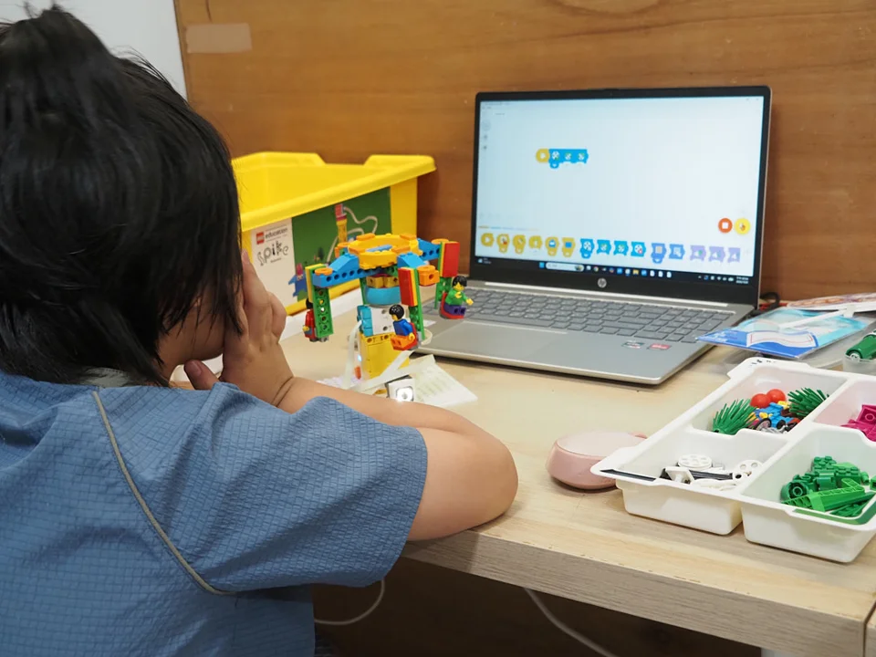
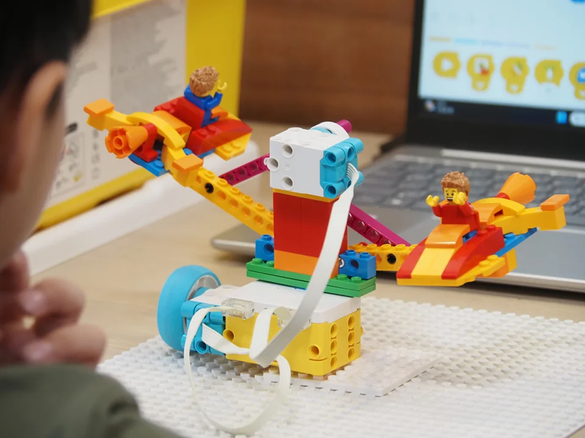

小小創作者，大大的可能。
每班最多 5 人 · 老師陪伴探索
每班最多 5 人 · 老師陪伴探索
歷屆上課情境，非本屆成果
01.21 — 02.03三個梯次，各自報名
每班最多 5 人1 人即開班
從零經驗開始依年級與能力選營
FIND THEIR NEXT ADVENTURE
三種探索，找到孩子的那一種。
喜歡動手組裝、想設計遊戲，或第一次接觸機器人，都有適合的起點。


LEARN BY MAKING
不是只照著做，
而是試著想。
作品動起來之前，孩子會觀察、提出想法、測試，再調整一次。把遇到的問題變成下一個挑戰，讓學習發生在每一次親手嘗試裡。
小班教學，保留每個孩子的節奏
每班最多 5 人，讓老師能陪伴孩子理解操作、練習表達自己的發現。
照片為歷屆教學情境。HOW TO JOIN
從感興趣，到準備好出發。
01 / 選擇與填寫
找到適合孩子的營隊
選定營隊、方案與早托日期，填寫一位孩子的報名資料。
02 / LINE 聯絡
讓老師找到你的報名
收到收件編號後，加入 LINE 並傳送孩子姓名與編號，確認名額與付款資訊。
03 / 教室確認
完成繳費，準備出發
完成繳費並收到教室確認，才算完成報名。表單收件不等於保留名額。
把一天交給創作，接送交給規畫。
一天的節奏
09:00–16:00 上課，包含午餐與午休。
08:30–09:00 一般到班。
08:00–08:30 早托須預約，每天 100 元。
不提供點心，孩子可自行攜帶。
安心接送
16:00–17:30 免費留班等候接回。
17:30 後每半小時 100 元，不足半小時以半小時計，最晚 19:00 接回。
在萬華，一起動手做
創意方塊機器人教室
台北市萬華區莒光路347巷20號1樓
開啟 Google 地圖 ↗
小班，讓探索有空間
1 人即開班，每班最多 5 人。三個營隊皆可零經驗參加；遙控車營仍須符合年級或組裝能力條件。
這個寒假，從一個好奇開始。
先選營隊，再一起確認孩子的學習起點。